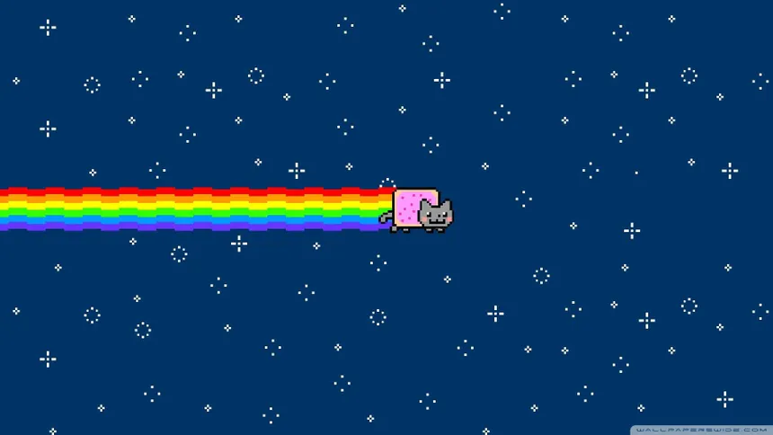

Pronto para jogar?
Clique no botão abaixo para verificar sua idade e abrir o templo em uma nova aba.

🔒 Jogo Bloqueado
Confirme sua idade para liberar o acesso.
Sobre o Jogo: Um Passa Tempo Digital
NyanPlay: é um pequeno site projetado para aliviar o estresse do dia a dia. Pensando em quem lida com a correria de estudos e estágios, criamos uma experiência aconchegante, onde a punição por errar é mínima e o foco é apenas aproveitar o momento.
Você assume o controle do lendário Nyan Cat! Com controles simples e responsivos, sua missão é explorar cenários desenhados em uma bela Pixel Art e curtir a trilha sonora relaxante. Deixe os prazos e as provas de lado por alguns minutos e apenas corra pelos campos.
Explorando o Mundo de Nyan
A jornada do nosso herói felino é dividida em ambientes únicos para você explorar:
🌳 Fase 1: Campos Verdes
O início da aventura funciona como um grande jardim de treinamento. O Nyan Cat corre livremente por um gramado verdejante sob um céu azul claro. Pule caixas de madeira e alcance o acolhedor Castelo de Caixas.
🗿 Fase 2: Templo Maia Felino
Saindo do campo aberto, encontre as ruínas escuras de um antigo Templo Maia. Sobreviva a um leve desabamento de pedras pulando pelos destroços para escapar.
Cantinho do Relaxamento ☕
Respire fundo e clique no botão abaixo para receber um lembrete felino especial.
A Voz da Comunidade Felina
Ajudou a relaxar? O que você mudaria na fuga do Templo Maia? Deixe seu feedback abaixo!